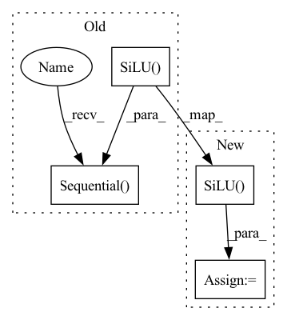

Pattern ID :41145
Before Change
self.to_lowres_time_hiddens = None
if lowres_cond:
self.to_lowres_time_hiddens = nn.Sequential(
SinusoidalPosEmb(dim),
nn.Linear(dim, time_cond_dim),
nn.SiLU()
)
time_cond_dim *= 2
// project to time tokens as well as time hiddens
After Change
self.to_time_hiddens = nn.Sequential(
Rearrange("... -> ... 1"),
nn.Linear(1, time_cond_dim),
nn.SiLU() ,
nn.LayerNorm(time_cond_dim),
nn.Linear(time_cond_dim, time_cond_dim),
nn.SiLU(),
nn.LayerNorm(time_cond_dim)
)
self.to_lowres_time_hiddens = None
if lowres_cond:
self.to_lowres_time_hiddens = copy.deepcopy(self.to_time_hiddens)
time_cond_dim *= 2
// project to time tokens as well as time hiddensIn pattern: SUPERPATTERN
Frequency: 3
Non-data size: 4
Instances Fragment ID: 116039570
Project Name: lucidrains/imagen-pytorch
Commit Name: f9a3daa3af1f78ccc113a1380f872432782770c5
Time: 2022-06-09
Author: lucidrains@gmail.com
File Name: imagen_pytorch/imagen_pytorch.py
M Class Name: Unet
N Class Name: Unet
M Method Name: __init__(1)
N Method Name: __init__(1)
M Parent Class: nn.Module
N Parent Class: nn.Module
M File Name: imagen_pytorch/imagen_pytorch.py
N File Name: imagen_pytorch/imagen_pytorch.py
M Start Line: 902
M End Line: 921
N Start Line: 904
N End Line: 934
Before Change
groups = 8
):
super().__init__()
self.block = nn.Sequential(
nn.Conv2d(dim, dim_out, 3, padding = 1),
nn.GroupNorm(groups, dim_out),
nn.SiLU()
)
def forward(self, x):
return self.block(x)
class ResnetBlock(nn.Module):After Change
super().__init__()
self.project = nn.Conv2d(dim, dim_out, 3, padding = 1)
self.groupnorm = nn.GroupNorm(groups, dim_out)
self.activation = nn.SiLU()
def forward(self, x, scale_shift = None):
x = self.project(x)
x = self.groupnorm(x) Fragment ID: 116039571
Project Name: lucidrains/imagen-pytorch
Commit Name: 156c496e411c0c4bcfce38846021afdc180dcdc7
Time: 2022-05-24
Author: lucidrains@gmail.com
File Name: imagen_pytorch/imagen_pytorch.py
M Class Name: Block
N Class Name: Block
M Method Name: __init__(4)
N Method Name: __init__(4)
M Parent Class: nn.Module
N Parent Class: nn.Module
M File Name: imagen_pytorch/imagen_pytorch.py
N File Name: imagen_pytorch/imagen_pytorch.py
M Start Line: 489
M End Line: 493
N Start Line: 489
N End Line: 491
Before Change
class Block(nn.Module):
def __init__(self, dim, dim_out, groups = 8):
super().__init__()
self.block = nn.Sequential(
nn.Conv2d(dim, dim_out, 3, padding = 1),
nn.GroupNorm(groups, dim_out),
nn.SiLU()
)
def forward(self, x):
return self.block(x)
class ResnetBlock(nn.Module):After Change
super().__init__()
self.proj = nn.Conv2d(dim, dim_out, 3, padding = 1)
self.norm = nn.GroupNorm(groups, dim_out)
self.act = nn.SiLU()
def forward(self, x, scale_shift = None):
x = self.proj(x)
x = self.norm(x) Fragment ID: 116039572
Project Name: lucidrains/denoising-diffusion-pytorch
Commit Name: e5a18bb25ca73a068647f4652933b07f3ef2ed74
Time: 2022-05-24
Author: lucidrains@gmail.com
File Name: denoising_diffusion_pytorch/denoising_diffusion_pytorch.py
M Class Name: Block
N Class Name: Block
M Method Name: __init__(4)
N Method Name: __init__(4)
M Parent Class: nn.Module
N Parent Class: nn.Module
M File Name: denoising_diffusion_pytorch/denoising_diffusion_pytorch.py
N File Name: denoising_diffusion_pytorch/denoising_diffusion_pytorch.py
M Start Line: 121
M End Line: 125
N Start Line: 121
N End Line: 123